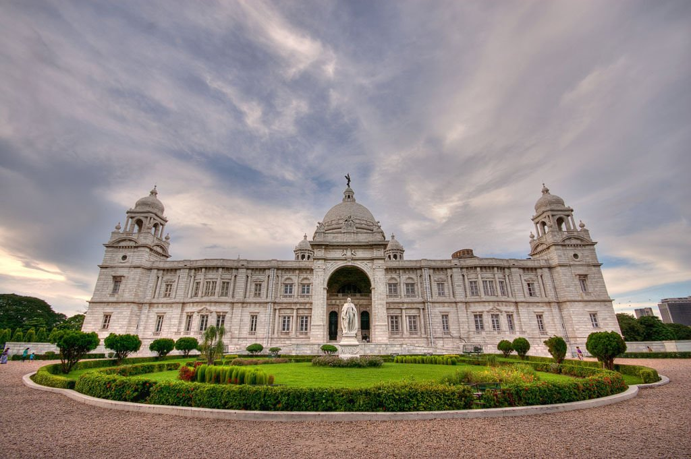
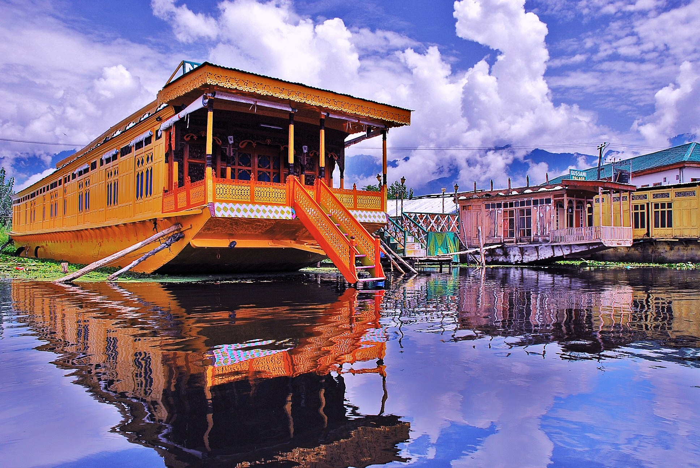

TAJ MAHAL
Standing majestically on the banks of River Yamuna, the Taj Mahal is synonymous to love and romance. The name "Taj Mahal" was derived from the name of Shah Jahan's wife, Mumtaz Mahal, and means "Crown Palace". The purity of the white marble, the exquisite ornamentation, precious gemstones used and its picturesque location, all make a visit to the Taj Mahal gain a place amongst the most sought-after tours in the world. However, until you know the love story behind the construction of the Taj Mahal, the beauty of the same would not enliven in your heart and mind and instead would come up as just another beautiful building/monument. It is the love behind this outstanding monument that has given a life to this monument.

VICTORIA MEMORIAL
The Victoria Memorial is a large marble building in Kolkata , West Bengal, India, which was built between 1906 and 1921. It is dedicated to the memory of Queen Victoria (1819–1901) and is now a museum and tourist destination under the auspices of the Ministry of Culture.The memorial lies on the maidan (grounds) by the bank of the Hooghly River, near Jawaharlal Nehru road.

DAL LAKE, KASHMIR
Jammu and Kashmir is the northernmost state of India. In the seventeenth century, the Mughal emperor Jahangir said that if paradise is anywhere on the earth, it is here (the Kashmir Valley), while living in a houseboat on Dal Lake[citation needed]. "Gar firdaus, ruhe zamin ast, hamin asto, hamin asto, hamin ast", which translates to "if there is ever a heaven on earth, its here, its here, its here". In Jammu and Kashmir the most important tourist places are the Kashmir Valley, Srinagar, the Mughal Gardens, Gulmarg, Pahalgam, Jammu, and Ladakh. Some areas require a special permit for non-Indians to visit.